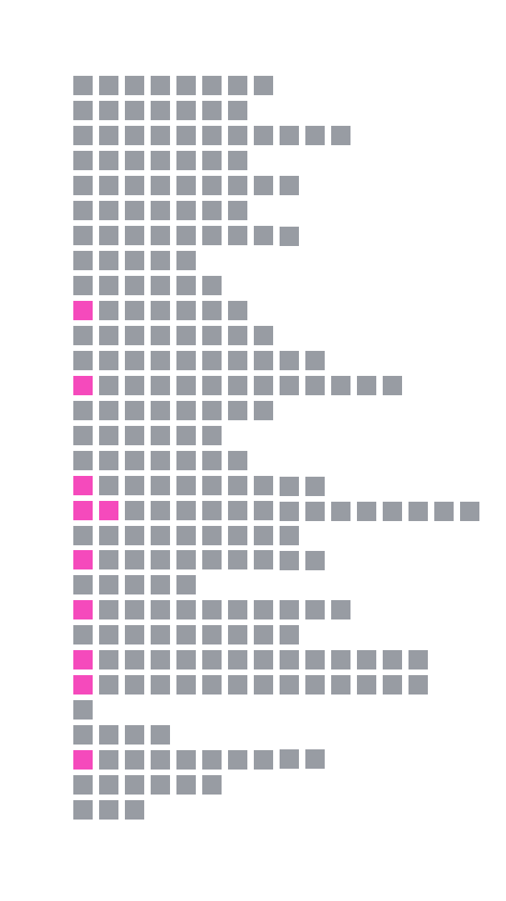

By Jasmin Nihalani
Published on August 07, 2025
Lush green valleys of Switzerland. Violins in the background.
A woman in a saree runs across. A man opens his arms — and millions fall in love.
Romance, in all its forms — the classic climax chase, the love triangle, the tragic ending — dominated Bollywood in the 1990s and well into the 2000s.
These decades gave us some of the most iconic films. Films that still draw crowds on Valentine’s Day.
Films that became history. Their albums played on loop and dialogues quoted endlessly.
But, after being smitten in love for years, it seems like Bollywood has moved on.
An analysis of blockbuster and hit films from the last three decades shows how romance, once the ruler of the box office, slowly faded away.
Films have multiple genres but for this analysis, each film has been classified based on its dominant narrative tone.
All romantic sub-genres — including rom-coms, romance-action, romance-drama, and romantic-thrillers — have been grouped under a single “romance” category.
Similarly, films labeled as action, action-comedy, or action-thriller have been grouped as “action.”
Horror, sci-fi, masala and thriller films have been clubbed together as “others.”
“Pyaar… Dosti hai” (Love...is friendship)
(1995-2004)
The decade was marked by some of the most iconic romantic bollywood films including Dilwale Dulhaniya Le Jayenge,
Devdas, Dil Toh Pagal Hai, Raja Hindustani, Mohabbatein and Veer Zara.
DDLJ released in 1995, remains the longest-running film ever, having played continuously since its release.
In 2025, it will mark 30 years in theatres.
In seven of the ten years, the highest grossing film of the year belonged to the romantic genre.
From mustard fields to machine guns
(2005-2014)
Et harum quidem rerum facilis est et expedita distinctio. Nam libero tempore, cum soluta nobis est eligendi optio
cumque nihil impedit quo minus id quod maxime placeat facere possimus, omnis voluptas assumenda est, omnis dolor
repellendus.Et harum quidem rerum facilis est et expedita distinctio.
Et harum quidem rerum facilis est et expedita distinctio. Nam libero tempore, cum soluta nobis est eligendi optio
cumque nihil impedit quo minus id quod maxime placeat facere possimus, omnis voluptas assumenda est, omnis dolor
repellendus.Et harum quidem rerum facilis est et expedita distinctio.
Et harum quidem rerum facilis est et expedita distinctio. Nam libero tempore, cum soluta nobis est eligendi optio
cumque nihil impedit quo minus id quod maxime placeat facere possimus, omnis voluptas assumenda est, omnis dolor
repellendus.Et harum quidem rerum facilis est et expedita distinctio.
Et harum quidem rerum facilis est et expedita distinctio. Nam libero tempore, cum soluta nobis est eligendi optio
cumque nihil impedit quo minus id quod maxime placeat facere possimus, omnis voluptas assumenda est, omnis dolor
repellendus.Et harum quidem rerum facilis est et expedita distinctio.

Et harum quidem rerum facilis est et expedita distinctio. Nam libero tempore, cum soluta nobis est eligendi optio
cumque nihil impedit quo minus id quod maxime placeat facere possimus, omnis voluptas assumenda est, omnis dolor
repellendus.Et harum quidem rerum facilis est et expedita distinctio.
Et harum quidem rerum facilis est et expedita distinctio. Nam libero tempore, cum soluta nobis est eligendi optio
cumque nihil impedit quo minus id quod maxime placeat facere possimus, omnis voluptas assumenda est, omnis dolor
repellendus.Et harum quidem rerum facilis est et expedita distinctio.